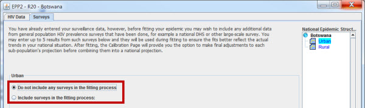
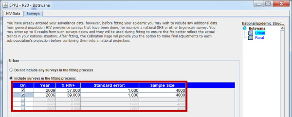

Since the beginning, the UNAIDS Reference Group has been aware of the limitations of HIV surveillance systems. Originally established to monitor the entry and initial growth of HIV in countries, the original WHO guidelines called for them to be placed in high prevalence settings. With the rapid growth of epidemics around the world, however, these systems were soon called upon to provide much more than evidence of HIV entry. Lacking other sources of data, countries and international agencies increasingly turned to them for an assessment of the national HIV situation in countries. It was recognized from the start that they were biased in an upward direction, being initially in higher prevalence urban settings. As rural components were introduced, it was further recognized that these too were most often upwardly biased - for reasons of accessibility and ability to attain adequate numbers of specimens during the surveillance period, they were often peri-urban rather than truly rural sites.
In most countries with generalized epidemics, the primary source of surveillance data has been pregnant women, and initially it was unclear how this related to overall national prevalence. In very few countries was any prevalence data available for men. While studies generally showed prevalence in pregnant women was a reasonable proxy for adult prevalence levels, this was still an assumption in all early attempts at estimation and projection.
In recent years, increasing numbers of national surveys, e.g., the Demographic and Health Surveys (DHS) or AIDS Indicator Surveys (AIS), have been gathering HIV prevalence data in large general populations samples of both men and women. Some countries now have two or three DHS surveys with HIV testing. Despite their own set of biases and difficulties, these surveys offer us a new, more comprehensive, window on the actual prevalence levels in a country. As the number of large surveys in a given country increases, they are now beginning to provide information on prevalence trends as well.
Such surveys are extremely valuable in generalized epidemic settings for calibrating the national epidemic. On the other hand, in most concentrated epidemic settings, the prevalence levels are too low to measure accurately using large scale population surveys without having excessively large sample sizes. However, this does not reduce the utility of the Surveys Page in concentrated epidemics. Many of the surveillance data sets gathered for populations with higher risk have major biases of their own. For example, surveillance data for people who inject drugs or sex workers is often gathered in detention centers, STI clinics, or drug treatment centers. This data may not be truly representative of the overall populations they are supposed to represent because of biases associated with recruitment to each of these types of sites.
Fortunately, today integrated HIV biological and behavioral surveys (IBBS) or (IHBBS) are increasingly being done, which gather linked data on risk behaviors and HIV. These often have more complete sample frames for people who inject drugs or sex workers as a whole, and are frequently more likely to be representative samples of the larger population of people who use drugs or sex workers. They also often collect data on detention and/or treatment seeking for STI and drug treatment. By linking the HIV data with data on those who have been in detention or in treatment in the last year, calibration can then be done for the trends in surveillance data to better reflect the overall situation in these populations as a whole.
If you enter survey data on this page, EPP will use them in two ways. First, they will be turned into a separate data series which is combined with the data series from surveillance sites to fit the overall trend in the epidemic. EPP will assign sample sizes to each point in the survey data equal to the number of people tested in the survey. This way, if there are two or more large scale surveys, they will inform the actual trend that EPP selects for the epidemic. In addition, during the initial fitting on the Project page, a calibration will be performed so that the selected best fit curve is chosen from those that come closest to the surveys, taking into account the standard errors in the surveys themselves. This will result in a final best fit curve which better reflects the national situation as shown by the large-scale surveys. It will also reduce uncertainty in the national projection on the assumption that the errors in the surveys are actual measurements of uncertainty in our knowledge of prevalence. With proper care, the merging of the prevalence levels obtained from larger scale surveys with the trends obtained from surveillance offers an opportunity to more accurately assess the current prevalence in a country or sub-population and the trends over time.

On first entry, the Surveys page offers you two options for each sub-population as highlighted in red above:
The user selects one of these by clicking on the radio button next to the appropriate option on the left-hand side of the page.
If you have a national survey or surveys and choose the option of using surveys in fitting, a table will appear for you to enter data as shown in the red box below. For each survey you have in this sub-population, check a box in the table in the column labeled “On”. This will unhide a line in the table where you can enter data for that survey.

Now enter the following data into each column in the table for up to 5 surveys:
Should you choose not to use surveys, you need only click on "Do not include any surveys in the fitting process" and the survey data entry table will be hidden. Should you wish to enter survey data for possible later use but not use it for your current fit, you can click on "Include surveys", enter your data as described above, then hit "Save and continue". Select the sub-population again in the National Epidemic Structure and change your choice to "Do not include any surveys in the fitting process". EPP will hide the table and will not use them in doing fits on the Project page. However, the values will still be stored and you can use them on the Calibration page to adjust your final projections to agree with the observed survey prevalence levels. If you decide later that you want to refit using the survey data, just click on “Include surveys in the fitting process” and the table will reappear. Now check the “On” boxes for any surveys you want to include in your next fit.
You should always document the sources and authors of the surveys used. This can be done by hitting the "Source" button. In the box which pops up you should enter your reasons for using that particular survey, the source of the survey prevalence values, and any other information that is needed for someone reviewing your projections later. Once this is done, click "Save and continue" to save the survey values and your choice regarding use of the surveys in fitting and you will be returned to Spectrum. Now choose Curve fitting (EPP) in the Spectrum Incidence menu and you will be brought into EPP3 on the Project page.